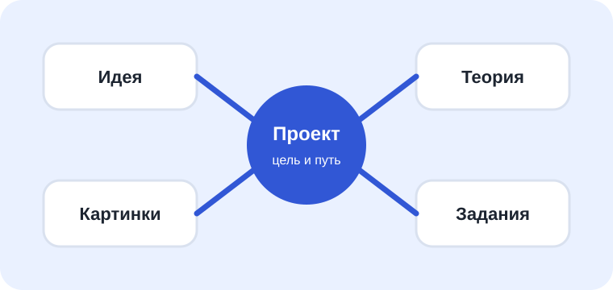

Урок 2
Сцена, модели и игровые роли
Цель урока: научиться смотреть на 3D-модель не только как на картинку, но и как на игровой объект с ролью.

Типы объектов
Герой
Главный персонаж. Им управляет игрок.
Проходимое окружение
Трава, декоративные элементы, через которые можно пройти.
Непроходимое окружение
Заборы, деревья, стены. Они ограничивают путь.
Интерактивные объекты
Ключи, яблоки, кнопки, двери, флаги. С ними игрок взаимодействует.
Мобы и NPC
Персонажи с поведением: говорят, ждут, преследуют, помогают или мешают.
Важное правило
Сначала определите роль объекта, потом выбирайте ПРИМС-диаграмму. Например, ворота — это не просто модель забора, а объект, который может быть закрытым или открытым.
Задания
- Возьмите идею игры из урока 1 и распределите объекты по типам.
- Отметьте, какие объекты должны иметь ПРИМС-поведение.
- Придумайте один объект, который меняет состояние: закрыт/открыт, опасен/безопасен, ждет/помогает.